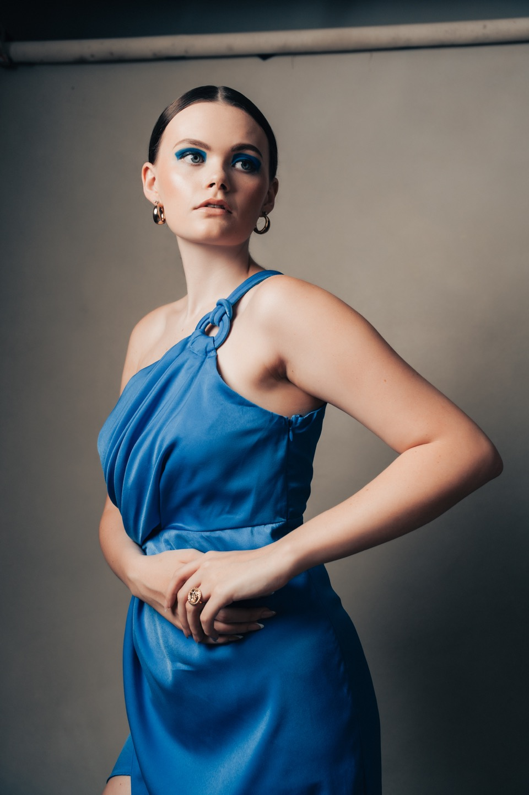

A little more
paying attention.
Photographs, stories, and observations.
On making things, being human, and noticing what's right in front of us.
A quieter corner
of the internet
There was a time when going online felt like going somewhere. Lately, I've been thinking about how to find a little of that feeling again.
Read the storyLearning to leave a little room
Making space for what doesn't fit on a list.